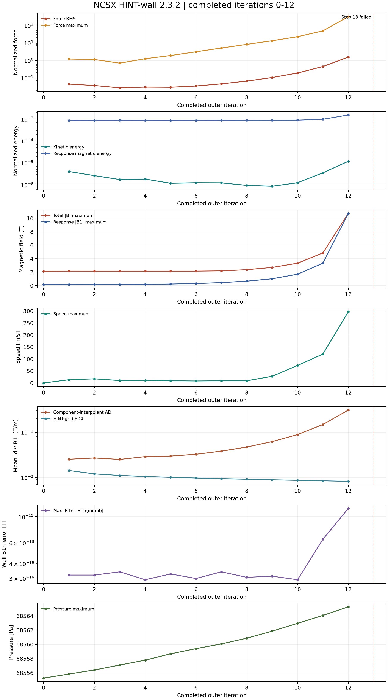

NCSX | HINT-wall 演化诊断
运行未达到预定 50 步。外迭代 1–12 完成；第 13 步 Step-B 的第一壁 RK 阶段离散散度约束检查失败并中止。第 13 步没有完整结果，以下曲线不是收敛平衡的证据。

完整数值见逐步数据 JSON；绘图及原始壁面场审计脚本可复核曲线。图中全域响应场的自动微分散度与四阶差分散度是不同诊断，不能混为同一物理量。
报错与判断
最后的日志为 first-wall RK-stage divergence constraint failed: residual/allowed=inf, wall_increment_relative_tolerance=1.000000e-05, iteration_budget=576; the step is rejected。这表示壁面 RK 阶段约束未通过，求解器拒绝该步；inf 是报告的失败比值，不能解释为已测得无限大的物理散度。日志没有保存失败阶段的完整场，因此尚不能确定最初触发误差的算子。
在此前数步，近壁总场最大值从第 8 步的 2.362 T 增长到第 12 步的 10.726 T，最大流速从 9.11 增至 297.03 m/s，归一化力残差 RMS 从 0.0662 增至 1.5544。第 12 步最大场点离壁约 4 mm。这是逐渐失稳的数值表现；数值不稳定是可能原因，但尚不能断言为真实 MHD 不稳定或单一边界算子的错误。
第一壁法向场
vmec 启动时冻结的是非零初始响应场的 B1·n。独立地从第 0–12 步保存的原始响应场、壁面 ghost/source 几何重建 72,930 个壁面采样值，不重新施加边界条件，测得初始 max|B1·n| = 0.0717937951 T；全程最大冻结误差 max|B1·n(t)-B1·n(0)| = 1.1744e-15 T。所以在已完成并保存的步数里，法向磁场保持良好；这不约束切向磁场增长，也不能证明未保存的第 13 步满足约束。
运行设置
- 版本
- HINT-wall 2.3.2；源码提交
8609e184e1d7b8bcabab662ddf1fb170243ded60 - 启动与压强
initial、vmec、scale_after=false- 磁场插值
component- 网格
- 144 x 144 x 144
- 迭代计划
- 50 个外迭代；每步 Step-B 1000 个内步，实际完成 12 步
- 其他控制量
kdivb=1e-4；壁面增量相对容差1e-5- 结果来源
- 原始 NetCDF SHA-256
e3da036e255a1629e51d1dc8e67b6fcccbec2eb6f9beddee11e38bca9f1fc257
详细分析见实例说明。此公开页面不上传原始 NetCDF、wout、mgrid 或运行缓存。